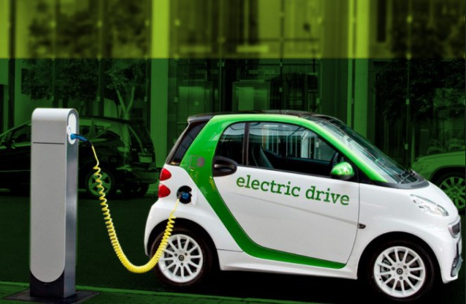
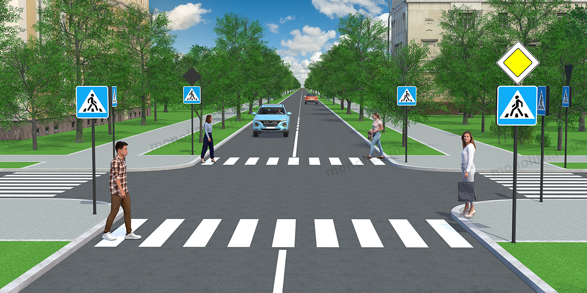
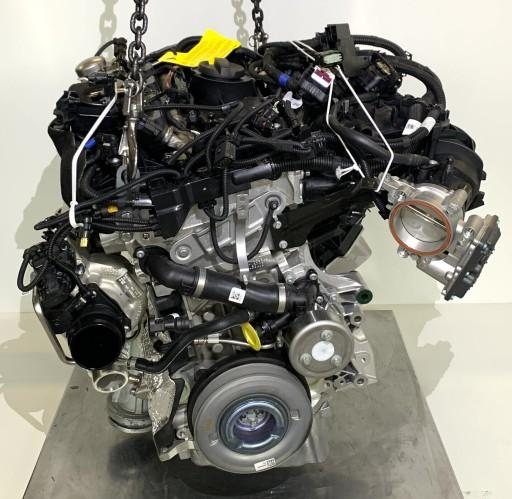

Електромобілі стають популярнішими серед водіїв
Автомобільний ринок поступово переходить до електричних моделей. Такі авто мають менше витрат на обслуговування та не створюють шкідливих викидів під час пересування.
Нові новини про автомобілі, технології та безпеку на дорогах.

Автомобільний ринок поступово переходить до електричних моделей. Такі авто мають менше витрат на обслуговування та не створюють шкідливих викидів під час пересування.

Сучасні автомобілі оснащуються ABS, ESP, камерами та датчиками. Такі технології допомагають водію краще контролювати автомобіль у складних дорожніх ситуаціях.

Сучасні двигуни та електронні системи автомобіля складаються з великої кількості компонентів. Через це якісна діагностика та обслуговування стають важливою частиною експлуатації авто.